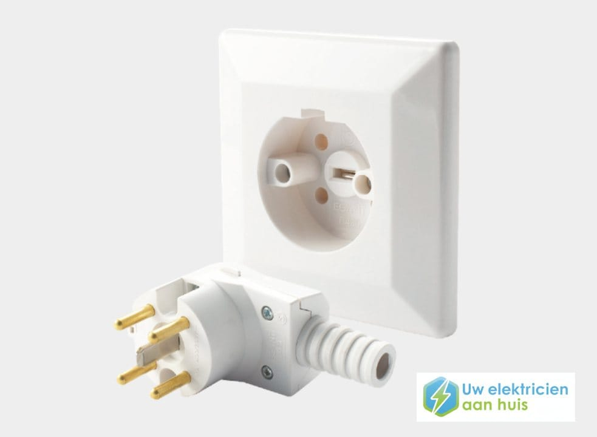

Elektricien Veghel 24 uur ⚡
Wilt u een Perilex-aansluiting laten plaatsen of heeft u een aparte kookgroep nodig voor uw kookplaat? De elektriciens van Elektricien Veghel helpen u daar graag bij!

Een Perilex-aansluiting is een speciaal type elektrische aansluiting dat wordt gebruikt voor apparaten met een hoog stroomverbruik, zoals een inductiekookplaat, keramische kookplaat, elektrische kookplaat of oven. Deze apparaten hebben meer vermogen nodig dan een standaard stopcontact kan leveren. Daarom is een Perilex-aansluiting essentieel om deze apparaten veilig en efficiënt van voldoende stroom te voorzien.
Heeft u een Perilex-systeem nodig? Dan bent u bij Elektricien Veghel 24 uur aan het juiste adres! Wij kunnen uw Perilex-aansluiting vakkundig installeren, inclusief een 3-fase Perilex-aansluiting voor apparaten met een hoog stroomverbruik.
Een Perilex-systeem bestaat uit een speciale wandcontactdoos en bijbehorende stekker, waarmee een hogere stroomsterkte veilig kan worden geleverd. Zo kunnen krachtige apparaten, zoals kookplaten en ovens, optimaal functioneren. Onze elektriciens verzorgen de volledige aansluiting van uw elektra, veilig en volgens de geldende normen.
Het vermogen van een Perilex-aansluiting ligt aanzienlijk hoger dan dat van een standaard stopcontact. Met een waterdichte Perilex-wandcontactdoos beschikt u over extra vermogen en kunt u uw inductie- of elektrische kookplaat veilig en betrouwbaar gebruiken, zonder risico op overbelasting.


Als u wel eens heeft gekeken naar de aansluiting van elektrische apparaten in uw keuken, heeft u waarschijnlijk gehoord van een Perilex-aansluiting of Perilex-stopcontact. Maar wat is dat precies?
Een Perilex-aansluiting is een speciaal type stopcontact dat wordt gebruikt voor apparaten met een hoog stroomverbruik, zoals inductiekookplaten. In tegenstelling tot een standaard stopcontact bevat het meerdere draden, waardoor het een veiliger en efficiënter stroomverbruik mogelijk maakt.
Wilt u meer weten over het aanleggen of aansluiten van een Perilex-aansluiting? Lees dan verder of neem direct contact op met Elektricien Veghel 24 uur.
Of het nu gaat om het aansluiten van een Perilex-stopcontact of het installeren van een Perilex-stekker, bij Elektricien Veghel 24 uur regelen wij het volledig voor u. Heeft u vooraf vragen over het laten aansluiten van een Perilex-systeem? Neem dan gerust contact met ons op – wij helpen u graag verder!
Een Perilex-aansluiting zorgt voor een stabiele en betrouwbare stroomtoevoer naar apparaten met een hoog vermogen, zoals inductiekookplaten en elektrische kookplaten. Deze apparaten hebben een constante en krachtige stroomvoorziening nodig om optimaal te kunnen werken.
Door een Perilex-aansluiting op uw groepenkast aan te laten sluiten, bent u verzekerd van voldoende vermogen en kunt u uw keukenapparatuur veilig en zonder onderbrekingen gebruiken.
Een Perilex-aansluiting met 3-fase biedt extra veiligheid en betrouwbaarheid. Deze aansluitingen zijn speciaal ontworpen om hogere stroomsterktes te kunnen verwerken en zijn vaak uitgerust met beveiligingsmechanismen, zoals zekeringen en aardlekschakelaars, die de stroomtoevoer onmiddellijk onderbreken bij overbelasting of kortsluiting.
Hierdoor wordt het risico op elektrische storingen sterk verminderd en neemt de veiligheid in uw keuken aanzienlijk toe – vooral bij het gebruik van een elektrische of inductiekookplaat. Een Perilex-stopcontact met de juiste fasedraden is daarbij van groot belang voor een veilige en stabiele aansluiting.

.png)
Voordat we aan de slag gaan, controleren we eerst of alle benodigde materialen aanwezig zijn, zoals een Perilex-stopcontact, Perilex-stekker en de juiste bekabeling. Daarnaast schakelen we altijd de stroom uit om een veilige werkomgeving te garanderen. Onze elektricien gebruikt hiervoor een spanningsmeter om zeker te weten dat er geen spanning meer op de installatie staat.
We beginnen met het voorzichtig verwijderen van de afdekking van het Perilex-stopcontact om toegang te krijgen tot de aansluitpunten. Dit doen we door de schroeven los te draaien of, afhankelijk van het type stopcontact, het klikmechanisme te ontgrendelen.
Daarna sluiten we de draden aan volgens de kleurcodering: de bruine draad voor de fase, de blauwe draad voor de nul en de groen/gele draad voor de aarding. Onze elektricien zorgt ervoor dat de bedrading stevig en correct wordt aangesloten op de juiste punten en controleert of er geen losse verbindingen zijn die een risico kunnen vormen.
Na het aansluiten plaatsen we de Perilex-stekker in het stopcontact en bevestigen deze stevig. Vervolgens voeren we een grondige controle uit om te verzekeren dat alle verbindingen correct zijn gemaakt en er geen zichtbare gebreken zijn.
Pas daarna schakelen we de stroom weer in en testen we het stopcontact om te controleren of alles naar behoren functioneert. Zo bent u verzekerd van een veilige en betrouwbare aansluiting.
Bij Elektricien Veghel 24 uur begrijpen we dat het aansluiten van een Perilex-stekker ingewikkeld kan lijken. Daarom staan onze ervaren elektriciens klaar om dit veilig, professioneel en efficiënt voor u uit te voeren, zodat u zonder zorgen gebruik kunt maken van uw apparaten. Neem gerust contact met ons op – wij helpen u graag met al uw elektrische installaties.
Een Perilex-stopcontact is speciaal ontwikkeld voor apparaten die een hogere stroomvoorziening nodig hebben en voldoet volledig aan de vereisten van een Perilex-aansluiting. In tegenstelling tot een standaard stopcontact met twee aansluitpunten, beschikt een Perilex-stopcontact over vijf aansluitpunten, waardoor de stroom veilig en efficiënt kan worden verdeeld naar uw apparaten. Tijdens het aanleggen of renoveren van de elektra zorgen onze elektriciens voor een veilige en correcte installatie.
U herkent een Perilex-stopcontact aan de ronde vorm met een uitsparing aan de onderkant, die ervoor zorgt dat de Perilex-stekker altijd op de juiste manier wordt geplaatst. Veel modellen zijn bovendien voorzien van een beschermkap, die de aansluitpunten afdekt wanneer het stopcontact niet in gebruik is – extra veilig en praktisch.
Veel mensen met een Perilex-aansluiting hebben vragen, bijvoorbeeld over krachtstroom of het gebruik van een aardlekschakelaar. Daarom hebben wij de meestgestelde vragen voor u op een rij gezet.
Staat uw vraag er niet tussen? Geen probleem – onze medewerkers van Elektricien Veghel 24 uur staan dag en nacht voor u klaar om u verder te helpen.
Bel 085 212 9861Een Perilex-aansluiting is een speciaal type stroomaansluiting dat wordt gebruikt voor apparaten met een hoog vermogen, zoals inductiekookplaten of elektrische ovens. Deze aansluiting kan meer stroom leveren dan een standaard stopcontact, waardoor zware apparaten veilig en efficiënt kunnen functioneren.
Neem contact op met onze elektricien.